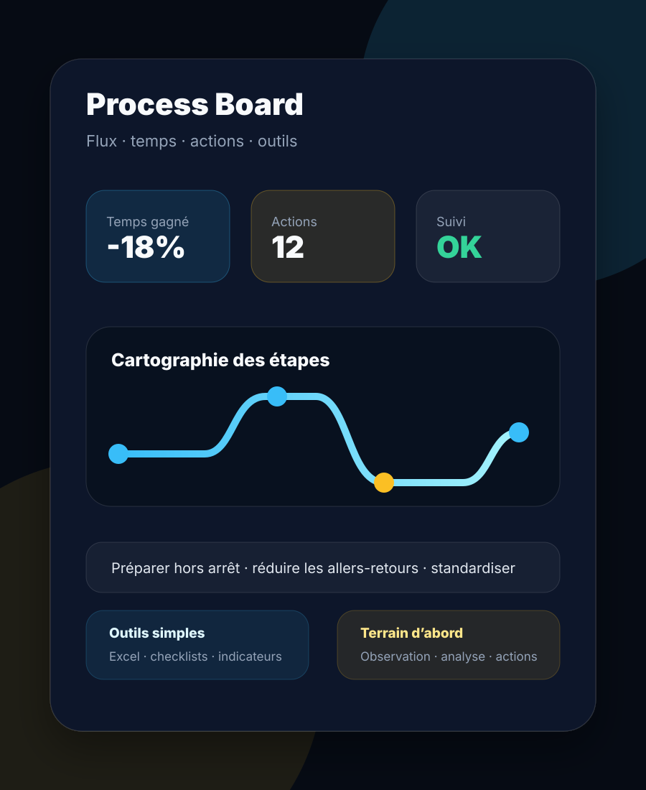
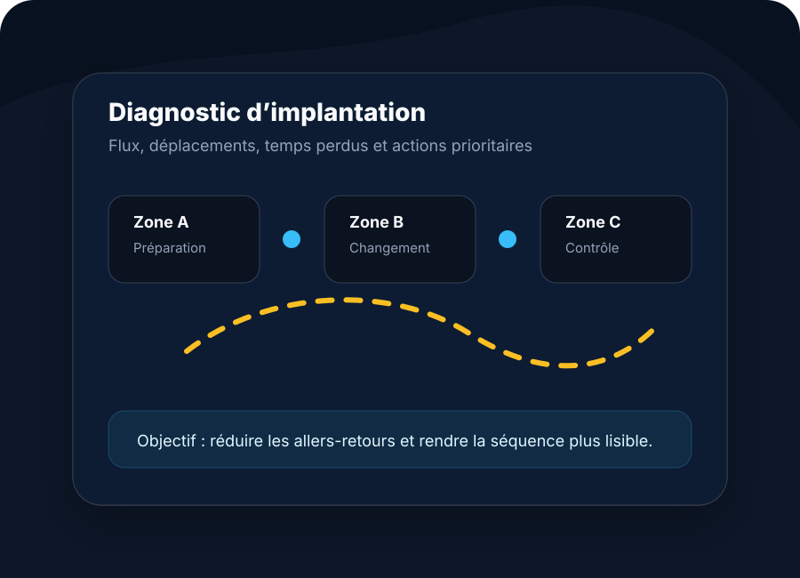

Pulse
Son, lumière & événements.
Location, installation et accompagnement technique pour soirées privées, événements associatifs, espaces DJ, salles et configurations sur mesure.
Entrer côté PulsePulse & Process
Pulse & Process sépare clairement deux besoins : équiper un événement avec du son et de la lumière, ou améliorer une organisation avec une approche terrain, des outils simples et des solutions concrètes.
Location, installation et accompagnement technique pour soirées privées, événements associatifs, espaces DJ, salles et configurations sur mesure.
Entrer côté Pulse
Amélioration terrain, réduction des pertes de temps, optimisation des déplacements, tableaux Excel, mini-sites et usages IA simples.
Entrer côté ProcessDeux expertises séparées
Plus de mélange entre événementiel, amélioration terrain et outils numériques : Pulse et Process ont chacun leur page, leur discours et leurs preuves.
Pulse présente uniquement les prestations liées au son, à la lumière, à la location de matériel et aux installations techniques.
Process présente l’analyse terrain, les flux, les temps de changement, l’organisation des espaces et les outils de suivi.
Le site garde la même identité visuelle, mais chaque pôle reste lisible, indépendant et compréhensible en quelques secondes.
Positionnement
Pulse & Process n’est pas présenté comme une liste de services sans lien. Le point commun entre les deux pôles est la qualité d’exécution : comprendre le contexte, préparer correctement et livrer une solution utilisable.
Un événement doit être fiable et agréable. Une organisation doit être fluide et mesurable. Dans les deux cas, le résultat doit être clair, propre et exploitable.
Aperçu
Les photos Pulse montrent de vraies installations. Les visuels Process mettent en avant la méthode, la structuration et les outils de pilotage.

Sonorisation, ambiance lumineuse et configuration technique selon le lieu.

Flux, déplacements, temps de changement et aménagements utiles.

Photos, exemples et résultats visibles pour comprendre les possibilités.
Contact
La première étape consiste simplement à expliquer le contexte, le lieu, le besoin et le résultat recherché.
Présenter un projet